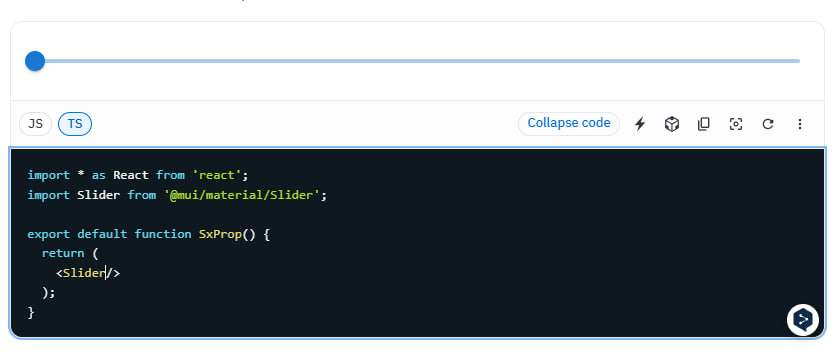
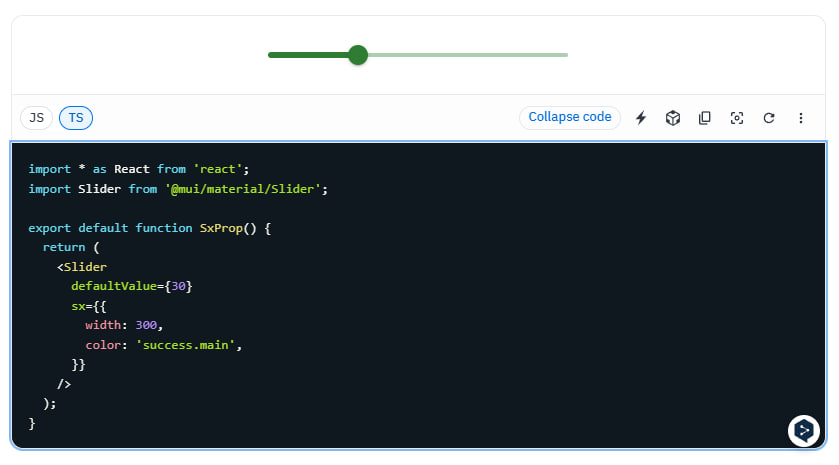
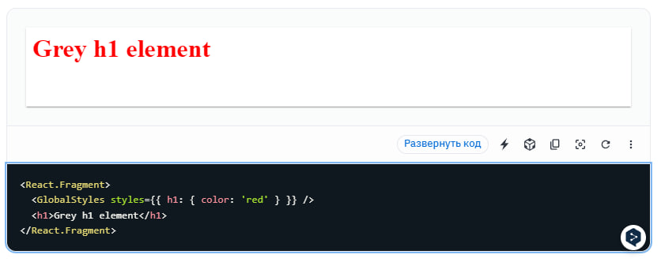

Introduction:
Material-UI is a React component library based on Google's Material Design system. It provides ready-made components such as buttons, forms, modal windows, and others, styled according to Material Design guidelines.
Advantages of Material-UI:
- Ready-made components: Material-UI offers a wide range of ready-made components, simplifying the creation of beautiful and modern user interfaces.
- Ease of use: Thanks to its integration with React, Material-UI is easy to learn and use in your projects.
- Customization: You can easily customize the styles of Material-UI components to fit your needs, allowing you to create unique designs.
- Responsive design: Material-UI components are designed with responsiveness in mind, making them suitable for use on various devices and screen sizes.
- Active community: Material-UI has a large and active community of developers where you can find support, documentation, and code examples.
Code examples:
Text field
Code examples:
Button
Customization:
Material UI allows you to create and apply custom themes to ensure a consistent look and feel across your entire application. Here's how you can do it:
Create a Theme:
Customization:
Apply the Theme:

Customization:
Material UI default slider
Customization:
Material UI custom slider
Customization:
Customization by global rewrite
Styled Components
Material UI provides styled() utility to style any existing components and create a new component.

Summary:
In summary, Material UI stands out as a powerful and versatile tool for crafting visually stunning and highly functional user interfaces within React applications. Its adherence to Google's Material Design principles ensures a modern and consistent look across various devices and platforms. With a wide range of pre-built components and customization options, Material UI empowers developers to streamline the UI development process while maintaining a professional and polished appearance.